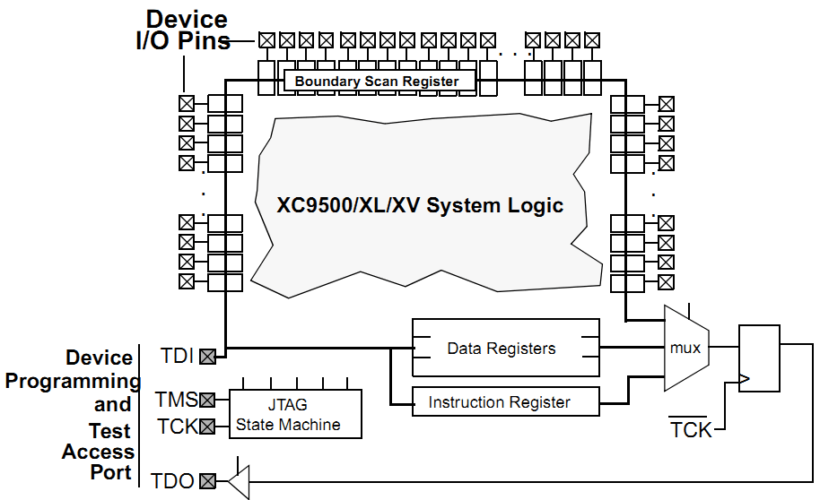
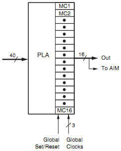

CPLD内部结构¶
XC9500XL¶
XC9500XL属于xilinx上一代的CPLD，在新的设计中基本不会再用， 但是提供的资料比较多，而且涉及到内部的实现，所以让我们先看看Xilinx的XC9500XL。
这块CPLD的Jtag在核心的功能模块、快速连接矩阵、IO外还实现了一个Jtag接口，包含TAP状态机和ISP在线编程模块。
TAP包含3个主要的寄存器：
- IR（Instruction Register）
- DR（Data Register）
- BSC（Boundary Scan Chain）
我们再看看Jtag的设计：
从图中看到TCK和TMS是给到TAP状态机的，IR和DR是寄存器，BSC是连接到边界IO的寄存器。
FBs¶
每个Function Block包含18个宏单元。每个宏单元用18根线连到FastCONNECT矩阵， 矩阵提供54根信号线给功能模块。还有些线是ISP编程线、全局时钟线。

看看细节，最左边是AND阵列（乘积项），“Product Term Allocator”可以自由的选择使用乘积项结果。


IOs¶
IO扫描实现是这样的：

我们先分析IO输入信号。IOB.I是从IO给到内部逻辑的，当INTEST有效的时候， 最右边的多路选择器会使用内部的锁存器，而不是真实的外部信号。
当SHIFT/CAPTURE有效的时候，左边的三个3-1多路选通器会选中1x端， 这样D触发器就级联成多位锁存器，当TCK给个上升沿的时候， TDI会从最上端给进来，数据移动一位，延迟一段很短的时间后TDO会被更新。
当使用EXTEST就是外部测试的时候，IOB.O会替换“输出D触发器”的值。 而且当IOB.T有效的时候，测试信号IOB.O会真正的给到PAD。 只有当UPDATE信号有效的时候，TCK上升沿会将触发器的数据更新到右侧。
这个是芯片的Die [6] :

CoolRunner-II¶
前面简单介绍了一下XC9500XL的Jtag结构，鉴于XC9500XL系列属于淘汰的型号， 并且手头只有CoolRunner-II的板子，为了方便后续的测试， 有必要了解CoolRunner-II的内部实现机制。因为Xilinx并没有完全公开内部的实现， 所以以下的结构有部分是猜测的。
我们来看看最新的CoolRunner-II系列。
这个是整体的系统结构图 [1] :

可以看到有这么几大块：
- BSC and ISP 是调试和在线配置模块
- I/O Blocks 是IO模块
- FBs 是Function Blocks（功能模块），其中包含两个子模块：
- MC1到MC16 是16个Macrocell（宏单元），包含触发器和一些基本的门
- PLA 是Programable Logic Array（就是以前常说的乘积项阵列），用于实现AND逻辑，并给出可组合的OR逻辑阵列
- AIM 全称Advanced Interconnect Matrix（高级互联矩阵），用于FBs的互联
FBs¶
FB是CPLD可编程的基础，从AIM给到PLA的信号有40路，每一路信号在内部使用的时候做了预处理， 包含原始信号和反向信号，这样可以很方便的使用信号。 虽然这种设计看似多了很多反相器，比较浪费，但这么一来就没必要用单独的Macrocell来做反向了。 其实资源利用率还是很高的。
PLA¶
PLA生成的乘积项会通过“线或”阵列给到Macrocell。 看看PLA和一个宏单元的内部，红框是PLA，其它部分是Macrocell。 每个FB的PLA可以给出的信号共有56路（可以用作PTA、PTB、PTC或CTC、CTR、CTS、CTE）。

Xilinx给出的使用例子，乘积项是可以复用的：

所以可以猜测macrocell有52根乘积项可以用作PTA、PTB、PTC， 4根乘积项可以用做CTC、CTR、CTS、CTE控制线。
从Xilinx的技术介绍里可以找到这幅图 [2] 和 [3]


从AIM给的信号有A、B、C，红点是配置成短路，X是断路。 这幅图为了便于说明可编程节点的功能，省掉了一些细节。 表达式 Y = A&B|C，X = A&B|!C，这里的X、Y可以是给到Macrocell的信号。 由于这里可以复用A&B的结果，所以节约了资源。
关于“可编程节点”的实现可以看看GAL、PAL的实现
这里附上可编程器件PAL的细节 [4] ：

再看看Lattice的GAL16V8细节：

只要接触过三极管的集电极开路（OC）、场效应管漏极开路（OD）实现的线与、线或逻辑 就容易理解上面这些“可编程节点”。 两个OC门并联、并添加上拉电阻就可以实现“线与”的功能， “线或”可以在“线与”的基础上添加反相器得到。
Timing¶
XC9500XL文档里规定的Jtag时序是这样的

从XC9500XL的时序可以看到时钟最高为10Mhz，TMS的建立时间“TMSS”为10ns。 TMS的保持时间“TMSH”为10ns。TDI的建立和保持时间分别是15ns和25ns。 TDO的延迟为35ns。
TAP¶
TAP状态机只和TCK、TMS有关。一般在TCK的下降沿更新TMS、TDI的电平，在TCK的上升沿采样TDO的电平，这样保证建立保持时间是符合要求的，数据是稳定的。
TAP状态切换图

可以看到一般情况下TMS为高的时候会切换状态，TMS为低的时候是保持，而Test-Logic-Reset是在TMS为高的时候保持。这么设计的目的是，如果不知道当前的状态，那么拉高TMS，持续5个TCK时钟就一定可以跳转到Test-Logic-Reset状态（仔细看看状态跳转图）。
以下只是为了说明在各个状态下，收到TCK后的行为，并不是实际的代码。
Select-DR-Scan¶
//verilog
always@(posedge TCK)
begin
if ((tap == SELECT_DR_SCAN) && !TMS)
addr_reg <= ADDR_DR;
else
addr_reg <= addr_reg;
end
Capture-DR¶
//verilog
always@(posedge TCK)
begin
if (tap == CAPTURE_DR)
r_dr <= odata_dr;
else
r_dr <= r_dr;
end
可以看到当从Capture-DR跳转到Shift-DR后，TDO已经是有效的了，但是TDI并没有移入。 只有在Shift-DR的状态给出TCK上升沿才能移入TDI数据。
Shift-DR¶
//verilog
always@(posedge TCK)
begin
if (tap == SHIFT_DR)
r_dr <= {r_dr, TDI};
else
r_dr <= r_dr;
end
需要注意的是最后从Shift-DR跳转到Exit1-DR的时候DR寄存器还是会移入一位TDI， 所以在处理的时候需要特别的注意。一般如果DR有N位，那么前N-1位保持TMS为0， 在最后一次需要把TMS置1。我最开始的时候就是没有注意这部分，导致移位总错。
Pause-DR¶
这个用途看起来没有用，其实还是可以好好用的，比如用SPI实现Jtag的时序， 如果那个SPI只能配置成8或16位，那么移位数据的时候一定是8的倍数的TCK上升沿， 在Pause-DR状态停留几次就可以保证不会有错误的状态跳转了。
Update-DR¶
//verilog
always@(posedge TCK)
begin
if ((tap == UPDATE_DR)
io <= dr;
else
io <= io;
end
IR的实现是类似的。
这个是XC2C32A的Die [5] :
对比官方的手册简单分析一下Die :

Footnotes
| [1] | ds090 CoolRunner-II CPLD Family, page 4 |
| [2] | xapp376 Understanding the CoolRunner-II Logic Engine, page 4 |
| [3] | xapp444 CPLD Fitting, Tips and Tricks, page 2 |
| [4] | Architecture of FPGAs and CPLDs: A Tutorial, page 5 |
| [5] | http://siliconpr0n.org/archive/doku.php?id=azonenberg:xilinx:xc2c32a |
| [6] | http://siliconpr0n.org/archive/doku.php?id=mcmaster:xilinx:xc9536xl |


This work is licensed under a Creative Commons Attribution-NonCommercial-NoDerivatives 4.0 International License. And license of code is under GNU General Public License Version 3.
本著作係採用創用 CC 姓名標示-非商業性-禁止改作 4.0 國際 授權條款授權. 涉及到的代码使用 GNU通用许可证 第三版 授权.